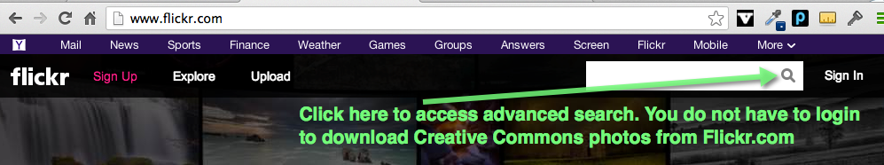
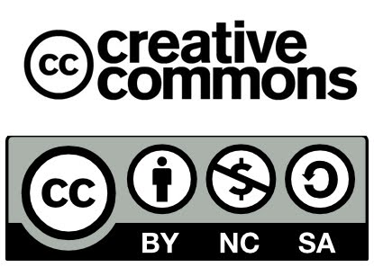

Using Flickr.com

First, find the photo you want. If it is from a digital camera you will want to resize it and make it as small as possible. It should be smaller than 300 x 300 and the file size should be under 100 kb. Your camera software should have tools to make copies of your photos for emailing. Use those same tools to make photos for your eFolio.
You can also get photos from the Web. However, just because it is on the Web doesn't mean it is yours to use.

With creative commons you can give people many different types of permissions, allowing them to use it under varying conditions.One source out on the Web is Flickr.com. Many people post their photos giving others permission to use them. Creative Commons is a new type of copyright that gives certain rights. For example, a photographer may allow you to use a photograph for your own purposes as long as you are not making money from it.
With copyright you either own a piece of work or you don't.